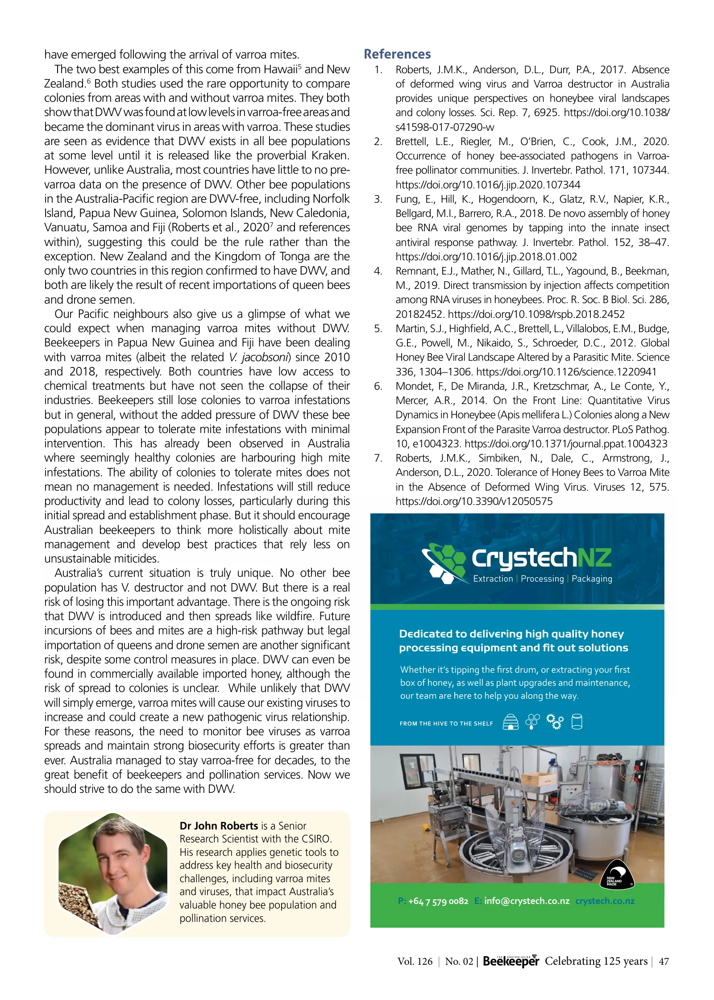

have emerged following the arrival of varroa mites.
The two best examples of this come from Hawaii5 and New
Zealand.6 Both studies used the rare opportunity to compare
colonies from areas with and without varroa mites. They both
show that DWV was found at low levels in varroa-free areas and
became the dominant virus in areas with varroa. These studies
are seen as evidence that DWV exists in all bee populations
at some level until it is released like the proverbial Kraken.
However, unlike Australia, most countries have little to no pre-
varroa data on the presence of DWV. Other bee populations
in the Australia-Pacific region are DWV-free, including Norfolk
Island, Papua New Guinea, Solomon Islands, New Caledonia,
Vanuatu, Samoa and Fiji (Roberts et al., 20207 and references
within), suggesting this could be the rule rather than the
exception. New Zealand and the Kingdom of Tonga are the
only two countries in this region confirmed to have DWV, and
both are likely the result of recent importations of queen bees
and drone semen.
Our Pacific neighbours also give us a glimpse of what we
could expect when managing varroa mites without DWV.
Beekeepers in Papua New Guinea and Fiji have been dealing
with varroa mites (albeit the related V. jacobsoni) since 2010
and 2018, respectively. Both countries have low access to
chemical treatments but have not seen the collapse of their
industries. Beekeepers still lose colonies to varroa infestations
but in general, without the added pressure of DWV these bee
populations appear to tolerate mite infestations with minimal
intervention. This has already been observed in Australia
where seemingly healthy colonies are harbouring high mite
infestations. The ability of colonies to tolerate mites does not
mean no management is needed. Infestations will still reduce
productivity and lead to colony losses, particularly during this
initial spread and establishment phase. But it should encourage
Australian beekeepers to think more holistically about mite
management and develop best practices that rely less on
unsustainable miticides.
Australia’s current situation is truly unique. No other bee
population has V. destructor and not DWV. But there is a real
risk of losing this important advantage. There is the ongoing risk
that DWV is introduced and then spreads like wildfire. Future
incursions of bees and mites are a high-risk pathway but legal
importation of queens and drone semen are another significant
risk, despite some control measures in place. DWV can even be
found in commercially available imported honey, although the
risk of spread to colonies is unclear. While unlikely that DWV
will simply emerge, varroa mites will cause our existing viruses to
increase and could create a new pathogenic virus relationship.
For these reasons, the need to monitor bee viruses as varroa
spreads and maintain strong biosecurity efforts is greater than
ever. Australia managed to stay varroa-free for decades, to the
great benefit of beekeepers and pollination services. Now we
should strive to do the same with DWV.
Dr John Roberts is a Senior
Research Scientist with the CSIRO.
His research applies genetic tools to
address key health and biosecurity
challenges, including varroa mites
and viruses, that impact Australia’s
valuable honey bee population and
pollination services.
References
1.
Roberts, J.M.K., Anderson, D.L., Durr, P.A., 2017. Absence
of deformed wing virus and Varroa destructor in Australia
provides unique perspectives on honeybee viral landscapes
and colony losses. Sci. Rep. 7, 6925. https://doi.org/10.1038/
s41598-017-07290-w
2.
Brettell, L.E., Riegler, M., O’Brien, C., Cook, J.M., 2020.
Occurrence of honey bee-associated pathogens in Varroa-
free pollinator communities. J. Invertebr. Pathol. 171, 107344.
https://doi.org/10.1016/j.jip.2020.107344
3.
Fung, E., Hill, K., Hogendoorn, K., Glatz, R.V., Napier, K.R.,
Bellgard, M.I., Barrero, R.A., 2018. De novo assembly of honey
bee RNA viral genomes by tapping into the innate insect
antiviral response pathway. J. Invertebr. Pathol. 152, 38–47.
https://doi.org/10.1016/j.jip.2018.01.002
4.
Remnant, E.J., Mather, N., Gillard, T.L., Yagound, B., Beekman,
M., 2019. Direct transmission by injection affects competition
among RNA viruses in honeybees. Proc. R. Soc. B Biol. Sci. 286,
20182452. https://doi.org/10.1098/rspb.2018.2452
5.
Martin, S.J., Highfield, A.C., Brettell, L., Villalobos, E.M., Budge,
G.E., Powell, M., Nikaido, S., Schroeder, D.C., 2012. Global
Honey Bee Viral Landscape Altered by a Parasitic Mite. Science
336, 1304–1306. https://doi.org/10.1126/science.1220941
6.
Mondet, F., De Miranda, J.R., Kretzschmar, A., Le Conte, Y.,
Mercer, A.R., 2014. On the Front Line: Quantitative Virus
Dynamics in Honeybee (Apis mellifera L.) Colonies along a New
Expansion Front of the Parasite Varroa destructor. PLoS Pathog.
10, e1004323. https://doi.org/10.1371/journal.ppat.1004323
7.
Roberts, J.M.K., Simbiken, N., Dale, C., Armstrong, J.,
Anderson, D.L., 2020. Tolerance of Honey Bees to Varroa Mite
in the Absence of Deformed Wing Virus. Viruses 12, 575.
https://doi.org/10.3390/v12050575
Vol. 126 | No. 02 |
Celebrating 125 years | 47